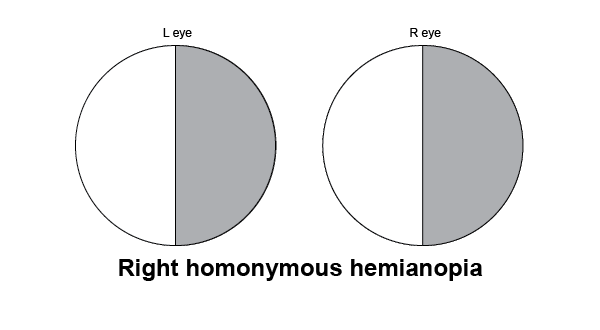
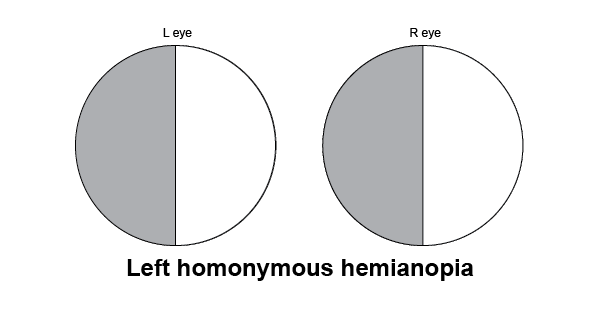

Cerebrovascular disorders arise form any pathology in blood vessels supplying the brain, such as occlusion by thrombus or embolus, increased vascular permeability, and vessel rupture. The pathologic processes underlying these conditions manifest themselves clinically as ischemia (with or without infarction; stroke vs. TIA) or hemorrhage. Strokes are the fifth leading cause of death behind myocardial infarctions and cancer.
A transient ischemic attack (TIA) is brief, reversible episode of focal neurologic dysfunction without acute infarction (⊝ MRI) that resolves within a few minutes (< 15 min) and completely by 24h. The ischemia can be caused by embolus, small vessel stenosis, etc.
A stroke (also known as a cerebrovascular accident, CVA) is an abrupt interruption in blood supply (either by ischemia or hemorrhage) to the brain, spinal cord, or eyes, leading to acute onset of focal neurologic deficits > 24h.
An ischemic stroke is an irreversible neuronal injury that occurs after 5 min of hypoxia. An acute blockage of the vessels leads to ischemia and infarction of the surrounding tissues. There are 3 types of ischemic strokes:
The most vulnerable regions of the brain are the hippocampus, neocortex, cerebellum (Purkinje cells), and watershed areas. [Mnemonic: "vulnerable hippos need pure water"].
A thrombotic stroke is a type of ischemic stroke that results from a platelet thrombus that forms over an inflammatory plaque in the middle cerebral a. or internal carotid a. This causes liquefactive (pale) necrosis that usually remains pale due to a lack of reperfusion. The brain exhibits a wedge-shaped area of infarction that develops at the periphery of the cortex. One to two days after infarction, edema develops with loss of demarcation between gray and white matter; myelin breakdown also occurs.
Sudden-onset focal neurological deficits such as unilateral weakness (face, upper extremities, lower extremities), slurring of speech, trouble walking, or visual disturbance, followed by slow improvement over time. Alternatively, patients may wake up in the morning with these symptoms. TIAs may precede the stroke.
Acronym: BE FAST
| Arterial Territory | Symptoms |
|---|---|
| Left MCA | Right hemiparesis & sensory loss Right homonymous hemianopsia

Tonic left gaze, right-sided neglect Aphasia
An inability to comprehend and/or formulate language due to damage to specific brain regions.
|
| Right MCA | Left hemiparesis & sensory loss Left homonymous hemianopsia

Tonic right gaze, left-side neglect Aprosodia
An inability to convey or interpret variations in the tone of voice. Caused by lesions in the Wernicke area of the nondominant hemisphere.
(anosognosia
The inability of a person to recognize their neurologic impairment
)
|
| Vertebral/Basilar/Posterior Cerebral a. | Diplopia Dizziness/vertigo Loss of consciousness Ataxia
A lack of coordination of voluntary movements
Dysarthria
A condition of impaired articulation resulting from motor dysfunction of the tongue, lips, or vocal cords
Bilateral vision loss |
| Penetrating end a.a. | Clumsy hand Dysarthria
A condition of impaired articulation resulting from motor dysfunction of the tongue, lips, or vocal cords
Pure motor symptoms Pure sensory symptoms |
Hemorrhagic (red) infarction is thought to result from lysis of embolic material following arterial occlusion and ischemic necrosis that leads to partial restroation of blood flow, which causes blood extravasation through the damaged vessels (reperfusion injury). Emboli originates most often from the heart or proximal atherosclerotic plaques in the carotid arteries.
Clinically, it is indistinguishable from a thrombotic stroke. On gross pathology however, hemorrhagic infarcts can be seen extending to the periphery of the cerebral cortext in the distribution of the arterial supply.
Treat the underlying conditions predisposing the emboli. Examples include: atrial fibrillation • carotid artery stenosis • DVT with patent foramen ovale • infective endocarditis • rheumatic heart disease. Anti-coagulants (e.g., warfarin) are preventive.
Intracranial hemorrhage accounts for ~15% of strokes. Intracranial hemorrhages are defined by location (see table below).
| Etiology | Presentation | Treatment/Prognosis | CT Images | |
|---|---|---|---|---|
| Epidural hematoma | Rupture of middle meningeal a. (MMA, branch of maxillary a.), often 2° to skull fracture involving the pterion (temporoparietal jxn). High-pressure hemorrhage with rapid expansion. | Transient loss of consciousness → lucid interval → rapid deterioration due to hematoma expansion
|
|
|
| Subdural hematoma | Rupture of bridging (emissary) v.v. b/t dural sinuses and arachnoid. Seen in
|
|
Removal of hematoma by craniotomy is the treatment of choice. Without treatment, several cerebral compression and displacement with temporal lobe-tentorial herniation can result in death. |
|
| Subarachnoid hemorrhage (SAH) |
|
|
|
|
| Intraparenchymal (intracerebral) hemorrhage |
|
Lateral striate artery hemorrhage 2° to HTN affects the
|
|
Cystic areas of microinfarction result form hyaline arteriolosclerosis (small vessels) 2° to HTN or DM. Lacunar infarcts often occur in the distal end of small cerebral vessels, causing a number of classic clinical presentations.
Clinical sx, imaging studies to rule out hemorrhage, Xߛray cerebral angiography
Modification of risk factors (control of HTN and DM, statins, and aspirin).
Generally fair to good, depending on the location and extent of damage